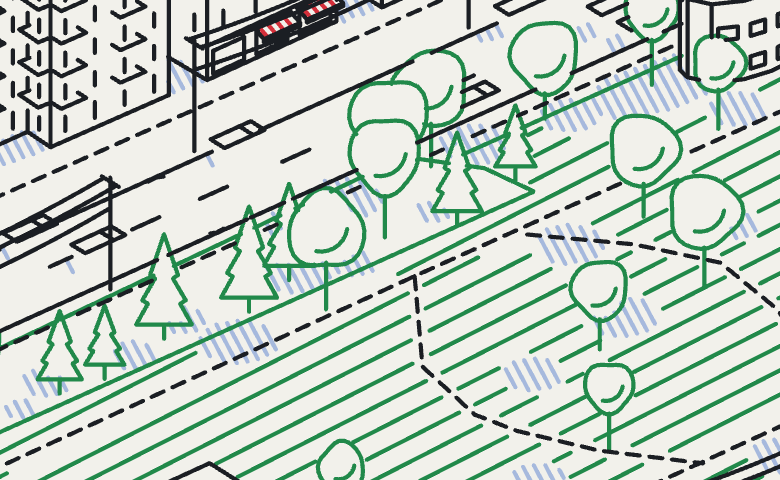
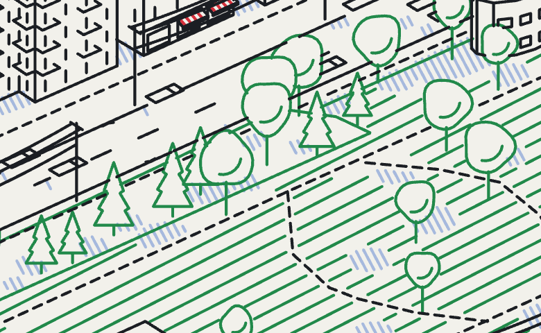
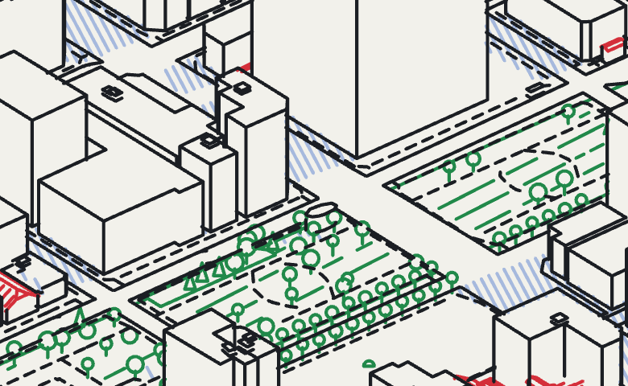

15 November 2026 · Original review · Round 15
Shadow hatching now shares the narrow path corridor already used by park and ground textures. The break stays continuous through dash gaps, making routes easier to follow through shade. Small shadow slivers separated by this clearance pass through the whole-patch filter from round 15.
At road crossings the path marks themselves are suppressed, so shadow hatching stays uninterrupted there. Disabling paths restores the original tone. The corridor is also available when shadows are enabled without parks or ground textures, and follows the paths layer’s own Detail.



Mollis, Sapporo and Rye at 1:1000 and 1:4000, Detail 1, 0.35 mm pen, optional OSM tags off. Sapporo at 1:1000 adds pen lifts where long hatches split, increasing estimated plotting time slightly. Its 1:4000 sheet saves about five minutes by removing crowded fragments. These are plotting estimates, not artistic scores.
| Sheet | Waste before → after | Estimated time change |
|---|---|---|
| Mollis 1:1000 | 6.0% → 5.9% | -0.33% |
| Mollis 1:4000 | 11.0% → 10.9% | -0.75% |
| Sapporo 1:1000 | 5.4% → 5.3% | +0.51% |
| Sapporo 1:4000 | 10.7% → 10.0% | -3.35% |
| Rye 1:1000 | 6.1% → 6.1% | -0.22% |
| Rye 1:4000 | 11.0% → 10.9% | -0.55% |
Before lab report · After lab report (local generated files)
Reviewed all twelve changed goldens, six LOD sheets and centre close-ups, plus the enlarged Sapporo comparisons. Golden changes are confined to cast-shadow linework and plot/SVG summaries; other feature totals, counts and census stay unchanged. Tests cover regular and broad pens, continuous clearance, restoration when paths are disabled, uninterrupted tone on roads, and removal of tiny newly separated fragments. Build and all 590 tests pass.
No physical prints were inspected, nor every view, seed, junction or all 29 presets. This is an intentional graphic break in a shadow, not a change to the lighting model. Standing objects and other infrastructure can still cross paths; they are not moved by this treatment. Short clipped path marks can still be filtered out, while their continuous corridor remains. The original shadow union still controls other ground-texture precedence.